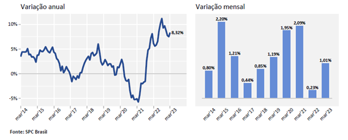
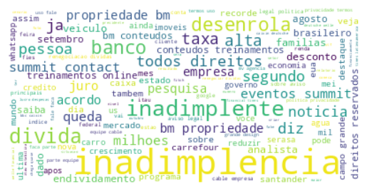

Topic Modeling Inadimplência
Topic modeling is a type of statistical modeling that uses unsupervised Machine Learning to identify clusters or groups of similar words within a body of text. This text mining method uses semantic structures in text to understand unstructured data without predefined tags or training data. Topic modeling analyzes documents to identify common themes and provide an adequate cluster. For example, a topic modeling algorithm could identify whether incoming documents are contracts, invoices, complaints, or more based on their contents.
Period of time 1/1/2021 - 22/04/2021
Facts that had an impact on default rates and were identified by the analysis.
1. Government Stimulus Measures: In response to the COVID-19 pandemic, many governments implemented financial stimulus measures, such as subsidies, emergency aid, and job protection programs. These measures helped to maintain the income of individuals and companies, reducing financial pressure and defaults.
2. Suspension of Electricity Cutoffs: In some countries and regions, authorities temporarily prohibited electricity cutoffs for non-payment. This measure was adopted to alleviate financial pressure on families and companies affected by the pandemic.
Fig. 1: wordcloud of the period
To explore the topic modeling, please click on the link provided below.
Period of time 19/3/2022 - 09/05/2022
During this period, we witnessed an unprecedented surge in the rate of defaults, reaching levels never seen before. This spike in non-payment instances was not just a marginal increase but a significant jump, indicating a deep-rooted issue within the financial system. It reflects a troubling trend where a larger segment of borrowers found themselves unable to fulfill their financial obligations.
Fig. 2: Map of the historical series of defaulters in Brazil.
Fig. 2.1: wordcloud of the period
To explore the topic modeling, please click on the link provided below.
Period of time 15/09/2023 - 13/11/2023
In our analysis, we also identified the "Desenrola" program, whose main objective is to reintegrate people with credit restrictions into the economy, allowing better conditions for renegotiating their debts.
Fig. 3: wordcloud of the period
To explore the topic modeling, please click on the link provided below.